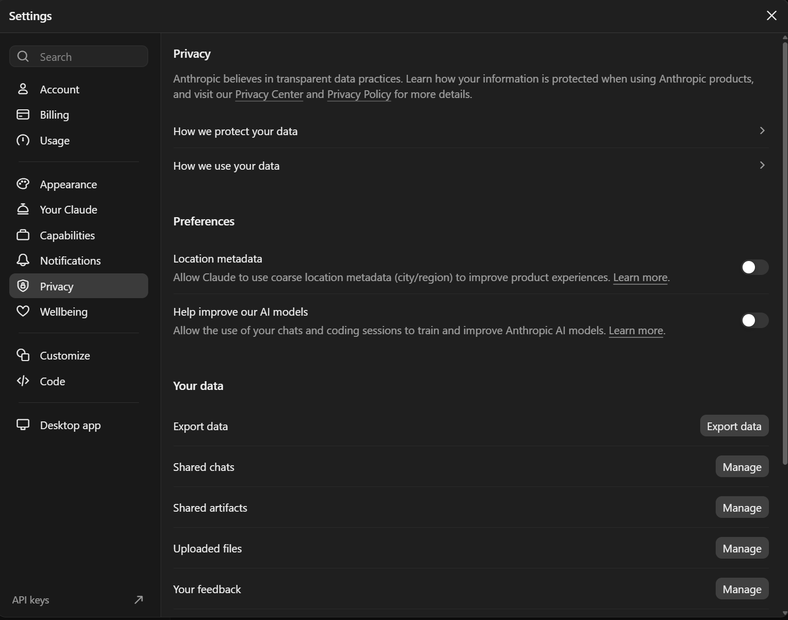
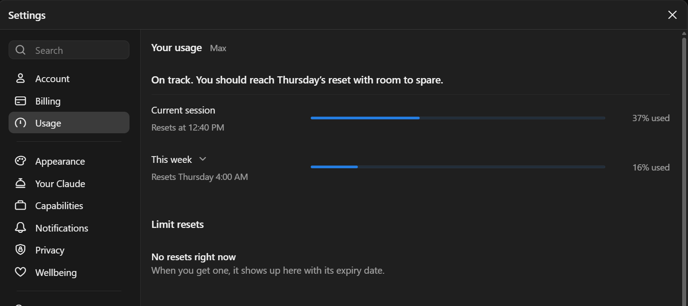

Mikä Claude on?
Claude lyhyesti
Claude on Anthropicin tekemä tekoälyavustaja. Kirjoitat sille tavallista tekstiä, ja se vastaa tekstillä, koodilla, taulukoilla tai kokonaisilla dokumenteilla. Claudeen voi liittää myös tiedostoja, kuvia ja lokeja.
Claudea käytetään selaimessa osoitteessa claude.ai, työpöytä- ja mobiilisovelluksilla sekä ohjelmointityökalu Claude Codella. Kaikissa on sama tili ja samat käyttörajat.
Tällä kurssilla opit ensin käyttämään Claudea keskustelussa (moduulit 0-5). Sen jälkeen näet, miten Claude Code tekee töitä suoraan omalla koneella (moduulit 6-10).
Mitä Claude osaa ja mitä ei
Claude on hyvä
- selittämään virheilmoituksen, lokirivin tai tuntemattoman komennon
- kirjoittamaan ja korjaamaan PowerShell-skriptejä, regexejä ja SQL-kyselyjä
- tiivistämään pitkän tekstin ja muotoilemaan tikettivastauksen tai ohjeen
- muuttamaan dataa muodosta toiseen, esimerkiksi CSV:stä taulukoksi
- ideoimaan ja käymään läpi vaihtoehtoja
Claude ei
- näe ympäristöäsi: se ei tiedä palvelimiasi, versioitasi tai asetuksiasi, ellet kerro
- tiedä aina uusimpia muutoksia: sen tiedot ovat tietyltä hetkeltä, ellei se hae verkosta
- muista aiempia keskusteluja automaattisesti, ellei muistitoiminto ole päällä
- ole aina oikeassa, vaikka vastaus kuulostaa varmalta
Claude voi olla väärässä varmana
Claude tuottaa uskottavan näköistä tekstiä. Joskus se keksii asioita, joita ei ole olemassa: cmdletin parametrin, rekisteriavaimen polun, asetuksen nimen tai version, jossa ominaisuus muka tuli. Tätä kutsutaan hallusinaatioksi. Vastaus on yhtä itsevarma silloin kun se on väärä kuin silloin kun se on oikea.
Tee tarkistamisesta tapa ennen kuin ajat mitään tuotannossa:
- Lue ohje:
Get-Help Get-ADUser -Parameter *taiGet-Command -Syntaxnäyttää, onko parametri olemassa. - Aja ensin turvallisesti: testiympäristössä,
-WhatIf-valitsimella tai pelkkänä lukuoperaationa. - Katso lähde: pyydä Claudea kertomaan, mihin dokumentaatioon vastaus perustuu, ja avaa se itse.
- Kysy vastaan: "Oletko varma, että tämä parametri on olemassa? Mistä versiosta alkaen?" Claude korjaa usein itse, kun sitä pyytää tarkistamaan.
Mitä ei koskaan liitetä
Kaikki mitä liität Claudeen, lähtee Anthropicin palveluun. Älä liitä:
- tunnuksia ja salaisuuksia: salasanat, API-avaimet, tokenit, yhteysmerkkijonot, varmenteiden yksityiset avaimet
- asiakkaiden ja käyttäjien tietoja: nimet, henkilötunnukset, sähköpostit, puhelinnumerot, tikettien henkilötiedot
- hakemistojen vientejä: AD- tai Entra-käyttäjälistat, ryhmäjäsenyydet, organisaatiokaaviot
- raakalokeja: lokissa on usein käyttäjänimiä, IP-osoitteita, palvelinten nimiä ja joskus salasanoja
- sisäisiä tietoja: verkkokuvat, palomuurisäännöt, haavoittuvuusraportit, sopimukset
Lokin anonymisointi
Lokista saa apua, kun poistat tunnistettavat tiedot ensin. Korvaa ne paikkamerkeillä, jotka säilyttävät rakenteen: sama käyttäjä on aina <KÄYTTÄJÄ1>, sama palvelin aina <PALVELIN1>. Silloin Claude näkee edelleen, mitä tapahtui ja kenelle.
Esimerkki anonymisoidusta lokiotteesta:
2026-11-03 08:14:22 <PALVELIN1> Kerberos pre-authentication failed for <KÄYTTÄJÄ1> from <IP1>
2026-11-03 08:14:25 <PALVELIN1> Kerberos pre-authentication failed for <KÄYTTÄJÄ1> from <IP1>
2026-11-03 08:14:31 <PALVELIN1> Account <KÄYTTÄJÄ1> locked out, caller <TYÖASEMA1>Tarkista anonymisoinnin jälkeen silmällä: jäikö jonnekin nimi, sähköpostiosoite, palvelimen nimi tai polku, jossa on käyttäjänimi?
Koulutusasetus ja tietojen säilytys
Ilmaisessa, Pro-, Max- ja Ultra-tilissä voit itse päättää, käytetäänkö keskustelujasi Clauden kehittämiseen. Asetus on kohdassa Settings > Privacy, kytkin Help improve our AI models (nimi voi vaihdella hieman).
| Asetus | Mitä tapahtuu |
|---|---|
| Päällä | Uusia keskusteluja voidaan käyttää mallien koulutukseen, ja niitä säilytetään tunnistamattomina enintään 5 vuotta. |
| Pois | Keskusteluja ei käytetä koulutukseen, ja ne säilytetään 30 päivää. |
Tarkista asetus itse heti kirjauduttuasi. Älä oleta sen olevan pois päältä. Huomaa myös:
- Incognito-keskusteluja ei käytetä koulutukseen, vaikka asetus olisi päällä.
- Poistettu keskustelu katoaa historiasta heti ja palvelimilta 30 päivässä.
- Peukku ylös tai alas -palaute tallennetaan erikseen, ja sitä säilytetään pidempään.
- Organisaation Team- ja Enterprise-tileillä keskusteluja ei käytetä koulutukseen.

Hinnat
Hinnat tarkistettu 11/2026 sivulta claude.com/pricing. Hinnat muuttuvat, joten tarkista ajantasainen tieto sieltä.
| Tilaus | Hinta | Kenelle |
|---|---|---|
| Free | 0 $ | Kokeiluun ja satunnaiseen käyttöön. Tämän kurssin moduulit 0-5 toimivat tällä. |
| Pro | 20 $/kk, vuosilaskutuksella 17 $/kk | Säännölliseen käyttöön. Sisältää Claude Coden. |
| Max | 100 $/kk | Runsaaseen käyttöön, noin viisinkertaiset rajat Proon nähden. |
| Ultra | 200 $/kk | Hyvin runsaaseen käyttöön, noin kymmenkertainen viikkoraja Proon nähden. |
Organisaatioille on lisäksi Team- ja Enterprise-tilaukset, joissa on keskitetty hallinta.
Käyttörajat: miten ne toimivat
Jokaisessa tilauksessa on käyttöraja. Se ei ole viestien määrä, vaan riippuu siitä, kuinka paljon Claude joutuu käsittelemään: pitkä keskustelu, isot liitteet ja raskaampi malli kuluttavat enemmän.
- 5 tunnin raja: käyttöä mitataan viiden tunnin jaksoissa, ja raja nollautuu viiden tunnin välein. Ultrassa vahvistetuilla tileillä tätä rajaa ei ole. Jos raja tulee vastaan, Claude kertoo, milloin voit jatkaa.
- Viikkoraja: maksullisissa tilauksissa on lisäksi viikkoraja, joka koskee kaikkia malleja yhteensä. Viikko nollautuu tilikohtaisena hetkenä, joka näkyy käyttönäkymässä.
- Yhteinen raja: claude.ai, työpöytäsovellus ja Claude Code kuluttavat samaa rajaa. Iltapäivän Claude Code -työ näkyy siis myös selaimen puolella.
| Tilaus | 5 tunnin raja | Viikkoraja | Fable-mallit |
|---|---|---|---|
| Free | Kyllä, nollautuu 5 tunnin välein | Hinnastosivu mainitsee myös viikkorajan | Ei käytössä |
| Pro | Kyllä, perustaso | Kyllä, kaikki mallit yhteensä | Eivät sisälly rajaan, maksetaan erikseen käyttökrediiteillä |
| Max | 5 kertaa Pro | 5 kertaa Pro | Oma viikkoraja Fable-malleille |
| Ultra | Ei 5 tunnin rajaa vahvistetuilla tileillä | 10 kertaa Pro | Oma viikkoraja Fable-malleille |
Jäljellä olevan käytön näet kohdasta Settings > Usage: nykyisen jakson jäljellä oleva aika ja seuraava viikkorajan nollautuminen. Claude Codessa saman näyttää komento /usage (moduuli 7).

Tiedot tarkistettu 11/2026 artikkelista Usage and length limits ja tilausten ohjesivuilta. Rajat muuttuvat, joten tarkista ajantasainen tieto sieltä.
Mallin ja effortin vaikutus
Rajaa kuluttaa se, kuinka paljon tekstiä Claude lukee ja tuottaa. Siihen vaikuttavat:
- Malli: raskaampi malli kuluttaa rajaa nopeammin kuin kevyt.
- Effort: korkeampi effort-taso tarkoittaa enemmän ajattelua ja siten enemmän käsiteltyä tekstiä.
- Keskustelun pituus: jokaisella viestillä Claude käsittelee koko siihenastisen keskustelun uudelleen.
- Liitteet: isot tiedostot ja lokit luetaan mukaan jokaisella viestillä.
- Välimuisti: Projektin sisältö on välimuistissa, ja uudelleen käytettynä se kuluttaa rajaa vähemmän (moduuli 3).
- Claude Coden agentit: yksi pyyntö voi käynnistää monta mallikutsua ja aliagenttia, joten yksi tehtävä voi kuluttaa paljon.
| Malli | Syöte (input) | Tuloste (output) |
|---|---|---|
| Haiku 5.5enintään 100 000 tokenin kehotteet; pidemmillä 0,50 $ / 2,50 $ | 0,10 $ | 0,50 $ |
| Sonnet 5.5 | 2 $ | 10 $ |
| Opus 5.5 | 4 $ | 20 $ |
| Fable 5.1 | 10 $ | 50 $ |
- lowTehokkain. Säästää selvästi tokeneita, kyvykkyys heikkenee hieman.
- mediumTasapainoinen, säästää kohtuullisesti tokeneita.Oletus: Opus 5.5 ja Haiku 5.5
- highKäyttää niin monta tokenia kuin tehtävä tarvitsee erinomaiseen tulokseen.Oletus: muut mallit
- xhighLaajennettu kyvykkyys pitkäkestoiseen työhön.
- maxSuurin mahdollinen kyvykkyys ilman rajoja tokenien käytölle.
Effort-tasojen kuvaukset ovat suomennos Anthropicin effort-dokumentaatiosta. Tasot ovat järjestys, eivät mitattuja kertoimia: korkeampi taso ajattelee enemmän ja kuluttaa enemmän, mutta kuinka paljon, riippuu tehtävästä.
Näin säästät rajaa
- Aloita kevyemmällä mallilla. Sonnet riittää useimpiin töihin; vaihda raskaampaan vain, jos vastaus ei riitä.
- Laske effortia yksinkertaisissa kysymyksissä. Lyhyt kysymys ei tarvitse paljon ajattelua.
- Aloita uusi keskustelu uudelle aiheelle. Pitkä keskustelu luetaan joka viestillä uudelleen (moduuli 1).
- Liitä vain tarvittava. Rajaa loki tai tiedosto siihen osaan, jota kysymys koskee.
- Kirjoita pyyntö kerralla valmiiksi. Tarkka ensimmäinen viesti säästää korjauskierroksia.
- Seuraa kulutusta. Katso Settings > Usage tai Claude Codessa
/usage, ja tyhjennä Claude Coden konteksti tehtävien välillä komennolla/clear(moduuli 7).
Claude Code vaatii maksullisen tilin
Claude Code ei sisälly ilmaiseen tiliin. Se vaatii vähintään Pro-tilauksen (tai organisaation Team- tai Enterprise-tilin). Siksi istunnot 2-4 ovat suurimmaksi osaksi kouluttajan demoja: Pro-käyttäjät voivat tehdä samat asiat omalla koneellaan, muut seuraavat demoa tai tekevät harjoituksia parin kanssa.
Harjoitukset
1. Löydä virhe Clauden vastauksesta
Joku kysyi Claudelta: "Miten listaan AD-käyttäjät, jotka eivät ole kirjautuneet 90 päivään?" ja sai tämän vastauksen. Vastauksessa on yksi keksitty asia. Mikä, ja miten olisit huomannut sen ennen ajamista?
Import-Module ActiveDirectory
Get-ADUser -Filter * -InactiveDays 90 -Properties LastLogonDate |
Select-Object Name, SamAccountName, LastLogonDate |
Sort-Object LastLogonDateNäytä esimerkkivastaus
Get-ADUser-cmdletissä ei ole parametria -InactiveDays. Sen näkee komennolla Get-Help Get-ADUser -Parameter InactiveDays, joka antaa virheen, tai ajamalla komennon, joka kaatuu virheeseen "A parameter cannot be found that matches parameter name 'InactiveDays'".
Toimiva tapa on esimerkiksi:
Search-ADAccount -AccountInactive -TimeSpan 90.00:00:00 -UsersOnly |
Select-Object Name, SamAccountName, LastLogonDateHuomaa, että LastLogonDate päivittyy viiveellä, joten raja ei ole päivän tarkka.
2. Anonymisoi lokiote
Alla on keksitty lokiote. Kirjoita se uudelleen niin, että sen voisi liittää Claudeen. Säilytä rakenne niin, että tapahtumien kulku näkyy.
Nov 03 09:02:11 web-prod-03 sshd[2211]: Failed password for matti.virtanen from 203.0.113.45 port 51122
Nov 03 09:02:15 web-prod-03 sshd[2211]: Failed password for matti.virtanen from 203.0.113.45 port 51122
Nov 03 09:02:19 web-prod-03 sshd[2214]: Accepted password for backup-svc from 198.51.100.7 port 40022
Nov 03 09:02:19 web-prod-03 sudo: backup-svc : TTY=pts/0 ; PWD=/srv/backup ; COMMAND=/usr/bin/rsyncNäytä esimerkkivastaus
Nov 03 09:02:11 <PALVELIN1> sshd[2211]: Failed password for <KÄYTTÄJÄ1> from <IP1> port 51122
Nov 03 09:02:15 <PALVELIN1> sshd[2211]: Failed password for <KÄYTTÄJÄ1> from <IP1> port 51122
Nov 03 09:02:19 <PALVELIN1> sshd[2214]: Accepted password for <PALVELUTILI1> from <IP2> port 40022
Nov 03 09:02:19 <PALVELIN1> sudo: <PALVELUTILI1> : TTY=pts/0 ; PWD=/srv/backup ; COMMAND=/usr/bin/rsyncHenkilön nimi, palvelutilin nimi, palvelimen nimi ja IP-osoitteet on korvattu. Sama arvo saa aina saman paikkamerkin, joten Claude näkee edelleen, että sama käyttäjä yritti kahdesti samasta osoitteesta. Portit, ajat ja komento voivat jäädä, koska ne eivät yksin tunnista ketään.
3. Tarkista oma koulutusasetuksesi
Kirjaudu claude.ai:hin, avaa Settings > Privacy ja katso, onko koulutuskytkin päällä vai pois. Päätä, kumman haluat, ja kirjoita ylös yksi asia, jota et koskaan liitä Claudeen työssäsi.
Näytä esimerkkivastaus
Asetus näkyy kytkimenä Privacy-sivulla. Kumpikin valinta on sallittu, kunhan se on tietoinen ja oman organisaatiosi ohjeen mukainen. Esimerkki kirjattavasta asiasta: "En liitä AD-käyttäjälistoja tai lokeja, joissa on käyttäjänimiä."
Lisä: lue lisää
- privacy.claude.com: Anthropicin tietosuojaohjeet kuluttajatileille
- Usage and length limits: käyttörajat tarkemmin
- claude.com/pricing: tilausten sisältö ja hinnat